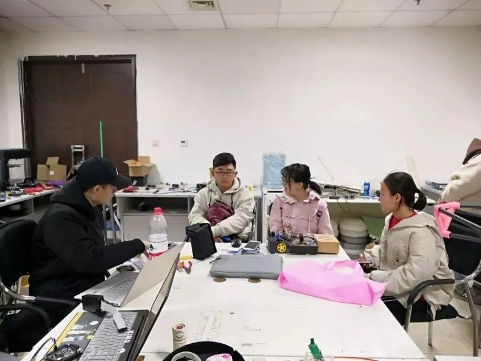
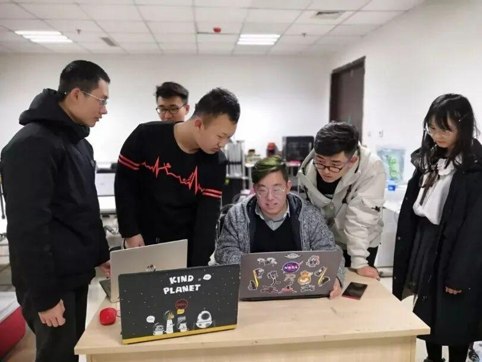
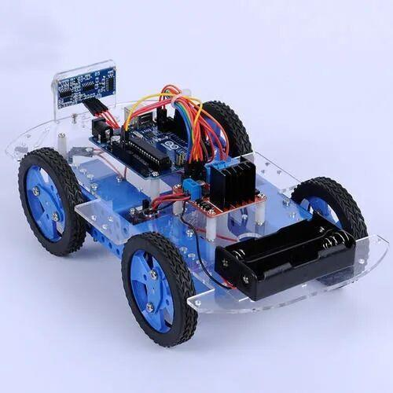
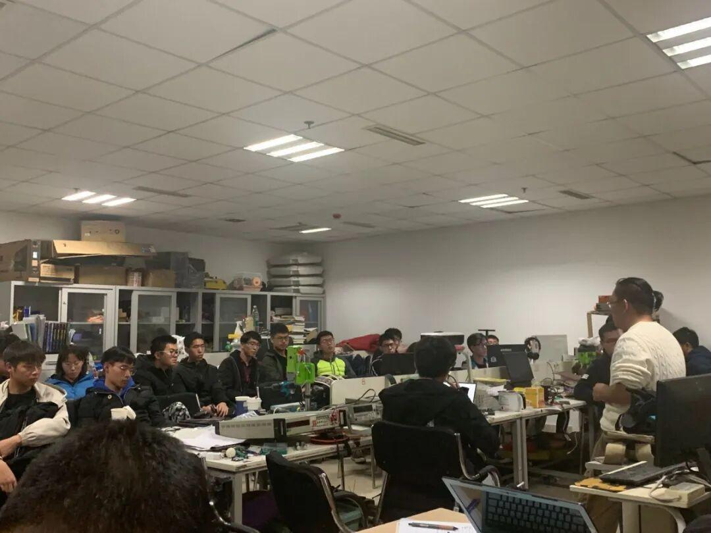
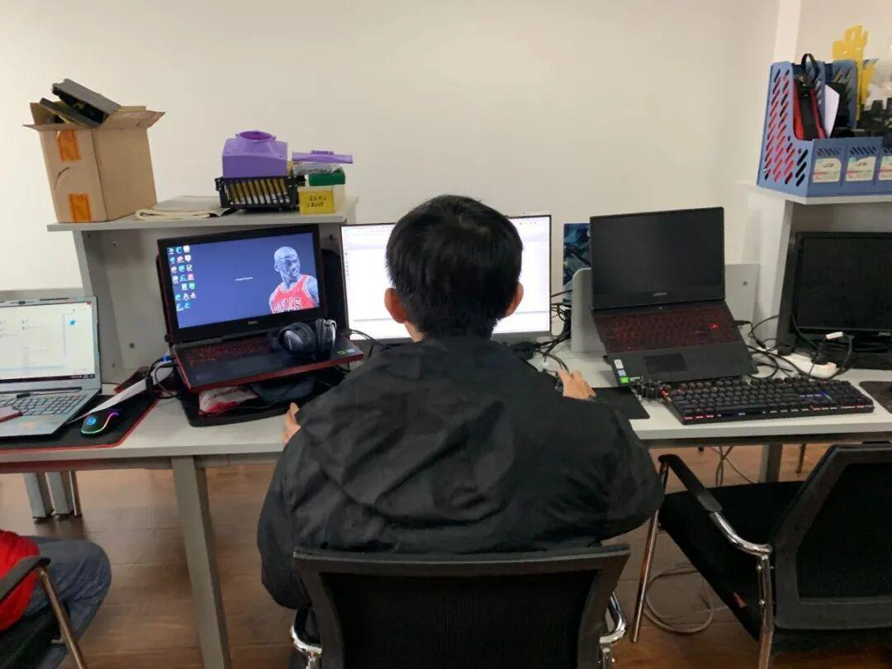

本学期事务安排来了！

不知不觉又到了三月
不知道大家上网课感觉如何
虽然受疫情的影响
我们还不能相聚在电协
但电协的任务依旧要安排起来
那么，现在让我们来看一看这个学期都有些什么活动吧
首先，我们技术部又要开始招新了，任何想要通过自己双手创造一些作品的小伙伴们，都欢迎来到我们技术部哦，这里将是你们大展身手的舞台。


其次，按照往年的惯例，本学期应该举行一次礼物设计大赛，但考虑到礼物设计大赛只具有观赏性，对抗性不强，不太好评选名次，而且焊接也是一个技术活。因此，本学期不发生意外的话，举行的将会是循迹小车对抗大赛，怎么样，是不是更加期待了呢。

而在比赛过后，就要开始准备RM大赛了，队员们又要开始马不停蹄的赶工去制造心爱的机器人了，虽然可能要熬许许多多个夜晚，但是能看到自己的机器人在赛场飞驰，再辛苦也值得呀！


让我们为他们加油吧!
由于受到疫情的，因此具体的时间都暂时未定，大家还请暂时保留住自己的热情，等到开学我们再一起放飞自我吧
END
文字|王杰
图片|来自网络